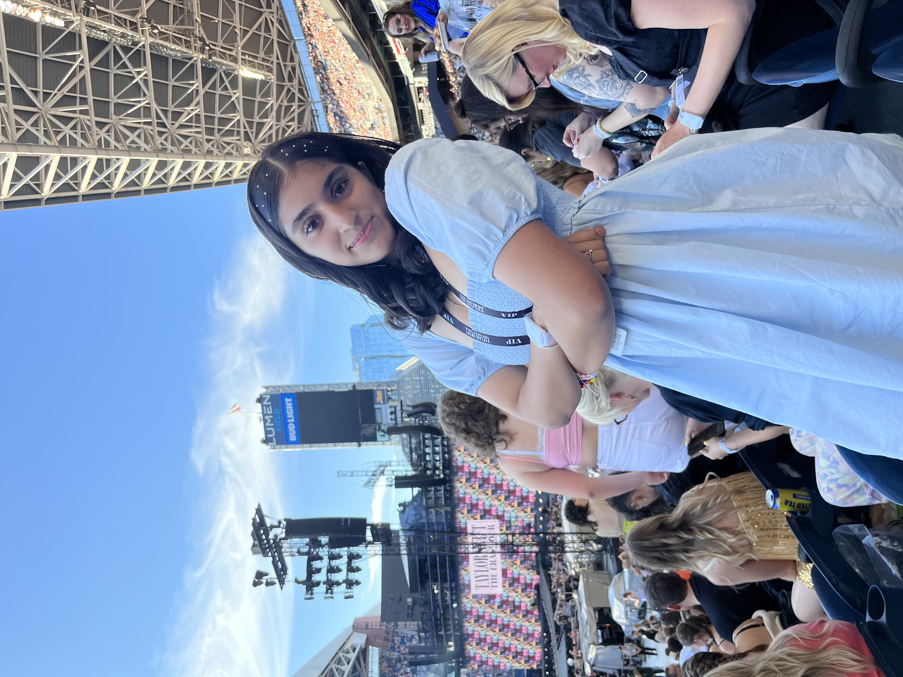

Welcome!!
This is a photo of me!

My name is Zara Tareen and I am a Pakistani American girl who was born in Houston, Texas.
I have lived in Washington for most of my life. My favorite hobbies are playing volleyball
and hiking. My dad and I love to go on simple and easy hikes on the weekend! I love my family,
friends, and food so so much!
Public (Github) Website
|
Github Repo